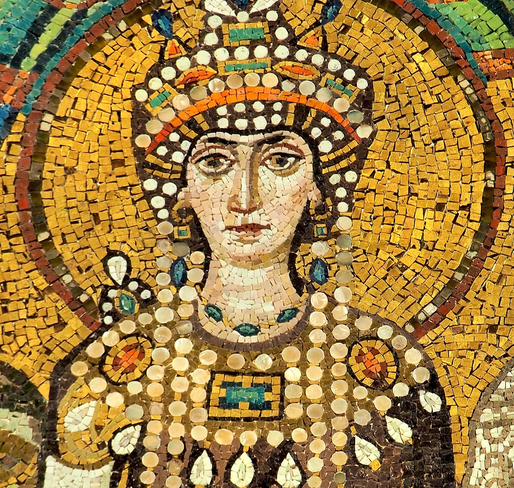

ĐẾN thành phố Alexandrie, cô gái điếm Théodora vào thành do cửa Nguyệt Môn (Porte de la Lune) tên gọi như thế vì phía trên cửa có chạm hình một cô Hằng Nga Hy Lạp mà sắc đẹp gần lõa lồ làm khoái mắt biết bao du khách từ các phương xa đến.
Lần đầu tiên bước gót phiêu lưu đến đô thị xa hoa rực rỡ của Ai Cập, Théodora không khỏi hồi hộp rung động. Nở một nụ cười thỏa thích mênh mông, nàng đứng ngắm một đại lộ rộng lớn, lát đá bằng phẳng, sạch sẽ, chạy thẳng băng trước mặt nàng, đến một nơi mịt mùng vô tận. Hai bên đại lộ, đứng sừng sững hai dãy cột tròn bằng đá cẩm thạch kế tiếp nhau xa tít tận đâu đâu. Người ta qua lại rộn rịp. Théodora đủng đỉnh bước tới một công viên rộns lớn đông nghịt dân chúng, toàn những khách thừa lương nhàn rỗi đi ngao du.
Đây là dân chúng Alexandrie, lẫn lộn Thiên chúa giáo, Do thái, Thần giáo Hy Lạp, La Mã... nổi tiếng là dân phong lưu, giàu sang nhất thời bấy giờ của đế quốc Byzantin, và cũng là dân trác táng nhất. Gái làng chơi ở đây toàn là gái tuyệt đẹp, và đắt tiền
hơn ở các đô thị khác. Họ trang điểm toàn là vàng ngọc châu báu, phục sức cực kỳ lộng lẫy. Chính vì thế mà Théodora, tuy đẹp không kém ai, nhưng áo quần không xa hoa, nữ trang không rực rỡ, tự thấy mình như một cô gái quê lạc loài giữa phồn hoa đô nội.
Nàng ở Alexandrie chỉ mấy ngày, không được ai để ý đến, buồn tình nàng bỏ đi đến Antioche, một thành phố Thổ nhỉ Kỳ cũng nổi tiếng là một đại đô thị có rất nhiều thắng cảnh. Lần này nàng đi thuyền trong Địa trung Hải, suốt một tháng trời bán than nuôi miệng. Nằm trên thuyền, bềnh bồng trên mặt song, Théodora nhớ chuyện nàng Marie Ai Cập (Marie L’Egyptienne), trước nàng đâu chừng 50 năm ở Alexandrie, cũng sống bằng nghề “ăn sương” như nàng, và cũng như nàng đi thuyền đến Palestine để tiếp tục hành nghề. Nhưng khi đến trước cửa nhà thờ Saint Sépulere ở Jerusalem, bỗng Marie - Ai Cập thấy hiện ra Đức Mẹ khuyên nàng đi tu. Nàng nghe theo tiếng gọi mầu nhiệm, liền bỏ nghề mãi dâm vào sa mạc sống cuộc đời khổ hạnh suốt 17 năm... Nàng chết năm 42 [1] được thành Thánh, tức là nữ thánh Marie L’Egyptienne mà hiện giờ Giáo hội Thiên chúa hãy còn thờ

Có những phút chán nản Théodora cũng muốn bắt chước Marie-Ai cập, nhưng nàng chưa thấy hiện hình ảnh nhiệm mầu của Đức Mẹ.
Trái lại, lúc qua thành phố Damas, nàng bị kẻ trộm lấy mất chút ít tiền bạc và nữ trang mà nàng đã dành dụm được bấy lâu. Theo sử gia Procope, thì kẻ trộm không ai khác hơn là một khách làng chơi. Sau khi thỏa tình mây mưa, chờ nàng ngủ say, hắn liền lấy hết nữ trang và tiền bạc của nàng rồi chuồn mất. Sáng ngủ dậy sửa soạn đi Antioche, nàng mới thấy bị con người dã man, tàn nhẫn, vô nhân đạo, lột sạch hết của nàng không còn để một xu dính túi.
Đi bộ đến Antioche, đêm đầu tiên nàng xin ngủ nhờ trên một chiếc chõng mục nát, xiêu vẹo, ngoài xó hè một quán cơm. Chán nản, Théodora cầu nguyện Đức Mẹ Maria, mong được Ngài hiện ra bảo nàng đi tu trong sa mạc, như Marie - Ai Cập. Nhưng lúc ngủ.., nàng thấy chiêm bao một tiếng huyền bí khuyên nàng đừng tuyệt vọng và bảo nàng: “Con cứ tiếp tục hành trình và trở về Constantinople, nơi đây con sẽ ngủ với Hoàng đế, và con sẽ được lên ngôi Hoàng hậu. Con sẽ được hưởng giầu sang bậc nhất trên đời”.
Théodora ngủ dậy, còn nhớ rõ giấc ban đêm. Nàng không tin lắm. Bụng đói, nàng đi lang thang trong thành phố Antioche, vừa nghĩ rằng tiền đâu để trở về Constantinople theo lời tiên tri trong mộng?
Từ Antiochc đến thủ đô của đế quốc Byzantin, con đường dài thăm thẳm, còn xa lắc xa lơ... Ngẫu nhiên nàng gặp một người bạn gái cũ. Vũ nữ Macédonie lúc bấy giờ hành nghề tại vũ đài Antioche. Théodora kể lại quãng đời phiêu lưu của nàng cho bạn nghe và không quên thuật lại đầu đuôi giấc chiêm bao đêm qua. Macédonie bảo:
- Em biết nghề quỷ thật nữa chị ơi. Em có cả bùa yêu linh nghiệm lắm. Nếu chị muốn, em cho chị một lọ nước hoa với bùa yêu trong đó. Chị xức nước bùa này trên tóc thì đàn ông sẽ mê tít chị cơ! Chị nên biết rằng loại bùa ái tình này linh nghiệm lâu bền có khi suốt đời, chứ không phải chỉ một tháng, một ngày đâu. Em nói thật đấy.
Nói xong cô vũ nữ Macédonie, người Hy Lạp, lấy trong túi ra một lọ nước thơm ngát, trao cho Théodora và cười bảo:
- Em chúc chị gặp nhiều may mắn nhé!
Théodora cảm ơn bạn, và cất kỹ lọ nước hoa để đến Constantinople hãy đem ra dùng. Bây giờ nàng phải ở lại Antioche để “làm tiền” một thời gian tạm sống qua ngày và để dành tiền đi Constantinople. Nàng tiếp tục nghề bán dâm vài tháng ở Antioche. Được mớ tiền kha khá, nàng thượng lộ về thủ đô Đế quốc Byzantin.
Théodora đến Constantinople ngay lúc tại đây vừa xảy ra một biến cố trầm trọng do sự thay đổi chính sách tôn giáo của triều đình đế quốc. Chung quanh việc Đức Mẹ Maria Đồng trinh sinh ra chúa Jésus tại thủ đô Constantinople có chia ra hai phe chủ trương hai thuyết chống đối lẫn nhau:
- Phe Chính thống (Orthodoxe) theo đúng Thánh Kinh, cho rằng Jésus Christ vừa là Chúa vừa là Người (à la fois Dieu et Homme). Chúa là do Đấng Chúa Cha mà có. Người, là do Đức Mẹ Maria mà có.
- Phe Tà thuyết (Hérésie monophysite) lại cãi rằng Jésus Christ là Chúa chứ không là người, là Chúa độc nhất, không phân chia ra thành người được (Dieu un et inpisible). Đức Mẹ Maria có thai Đức Jésus không phải thông lệ của người phàm trần, mà là theo phép mầu nhiệm của Chúa.
Hai phe này vẫn chống nhau kịch liệt từ lâu, mà ngay Đức Giáo Hoàng ở La Mã cũng bất lực, không thể nào dàn xếp cho đôi bên ổn thỏa. Hoàng đế Anastase của đế quốc Byzantin lại là người của phe Tà thuyết, luôn luôn ủng hộ phe này. Khi Théodora vừa chân ướt chân ráo đến Constantinople thì Hoàng đế Anastase băng hà, và trong Hoàng cung có một cuộc đảo chính. Đa số các quan Triều thần thuộc phe Chính thống bắt giam Hypatios là cháu đích tôn của Hoàng đế, và đã được Hoàng đế phong làm Thái tử để nối ngôi Vua. Hypatios cũng là người của phe Tà thuyết. Phe Chính thống mạnh hơn, bỏ di chúc của Hoàng đế không cho Thái tử Hypatios kế vị và bắt giam hết những người của phe Vua, để tôn lên ngôi một người của phe Chính thống được họ tín nhiệm, là JUSTIN. Ông này là Chỉ huy trưởng Ngự lâm quân, một sĩ quan già lụ khụ, trên 70 tuổi, dốt nát, không biết đọc, biết viết, nhưng có người cháu tên là JUSTINIEN, có học chút ít, và là một nhân vật có uy tín nhất của phe Chính thống.
Chính Justinien đã khôn khéo vận động với các đồng đảng để tôn Justin là chú của y lên ngôi Hoàng đế, và y làm cố vấn chính trị và tôn giáo. Cuộc đảo chính xy ra năm 518, lúc bấy giờ Justinien đã 36 tuổi.
Justin chỉ làm vua bù nhìn, Justinien mới là nhân vật đáng kể.
Theo các hình tượng còn để lại, và theo mấy câu vắn tắt của Procope tả hình dung của y thì Justinien là một người tầm thước, hơi mập, mặt tròn và núc ních, có để một làn râu mép lưa thưa. Toàn thể gương mặt không sáng sủa mấy, trông ngớ ngẩn là khác, nhưng thủ đoạn một tay. Trước kia, y là một kẻ tiểu tốt vô danh sống vất vưởng ở thôn quê. Còn chú của y, Justin, một tên võ học, bỏ nhà ra thủ đô kiếm việc làm trong Ngự lâm quân, được lên chức Chỉ huy trưởng hồi nào, gia đình cũng không ai hay biết, và cũng lâu lắm ông không có tin tức liên lạc vì với họ hàng cả. Thế rồi đột nhiên ông nhắn người về làng gọi Justinien ra thủ đô để làm thư ký cho ông. Justinien đem cả vợ con theo. Nhờ ở địa vị thư ký của viên Quan Ba Chỉ huy trưởng Ngự lâm quân hầu cạnh hoàng đế, Justinien giao thiệp với các quan Triều thần thuộc phe Chính thống, hăng hái tuyên truyền cho phe này, và xã giao khôn khéo dần dần gây được cảm tình và uy tín trong phe đảng.
Năm 518, khi Hoàng đế Anastasc băng hà, Justinien nuôi tham vọng làm vua, bèn cầm đầu phong trào diệt trừ phe Tà thuyết, và vận động cho người chú 70 tuổi ở Ngự lâm quân lên kế vị. Y biết rằng chú y gần chết và y sẽ nối ngôi Hoàng đế.
Bây giờ y đã là nhân vật số một của đế quốc, một vị Đại Trượng phu, một Tể tướng và là …người yêu chính thức của Théodora!
Justinien quen biết Théodora hồi nào, trong trường hợp nào?
Không ai biết. Sử sách không nói đến. Ngay nhà viết sử Procope, theo dõi đời sống lãng mạn của cô gái làng chơi này từ thuở nàng mới có 10 tuổi, cũng không biết rõ. Còn bé, Théodora đã “phải lòng” mấy thằng cắt cỏ ngựa ở Trường Đua, và đã hiến thân cho chúng ở dưới gầm cầu Constantinople. Nhưng Procope không biết cuộc ái ân của nàng với vị Đại thần Justinien xẩy ra hồi nào Procope chỉ ghi một câu ngắn ngủi trong quyển Hồi ký của ông: “Khi nàng trở về thủ đô, Justinien gặp nàng và yêu nàng say mê”.
CÔ GÁI ĐIẾM VÔ DANH BƯỚC LÊN NGÔI HOÀNG HẬU.
Nhà viết sử Procope không nói rõ trong trường hợp nào vị Trượng phu trẻ tuổi Justinien đã gặp Théodora lúc nàng vừa chân ướt chân ráo đến thủ đô Constantinople. Điều ấy khiến người hậu thế rất ngạc nhiên, vì Procope đã theo dõi những cuộc phiêu lưu của Théodora từ lúc thiếu thời, không sót một chuyện gì trong đời sống của nàng mà ông không thuật lại rõ ràng những chi tiết.
Các sách viết dưới thời Hoàng đế Justinien, thế kỷ VI, cũng không đá động đến chuyện ấy. Mãi thế kỷ thứ XI, mới có một vài nhà văn Hy Lạp chép rằng: “Théodora thuê một ngôi nhà nhỏ ở kế cận Cung điện nhà vua, và ở đây Théodora sống cuộc sống ẩn dật và đạo đức, suốt ngày chỉ đan len bỏ mối cho bạn hàng, làm kế sinh nhai như một cô gái hiền nết na, đứng đắn, nhưng tuy còn trẻ mà nhan sắc tàn tạ vì lúc dĩ vãng ăn chơi quá độ”. Có người cho rằng ngôi nhà này chính là do Justinien thuê cho Théodorn ở để đêm đêm ông có thể tới lui với nàng mà không sợ ai để ý. Sau khi lên ngôi Hoàng hậu, Théodora phá ngôi nhà này để dựng lên một thánh đường thờ Đức Bà Maria để tạ ơn Bà đã “thương nàng và tiếp dẫn nàng đến địa vị Hoàng hậu”.
Nhiều người đồng thời ở Hy Lạp trong giới trí thức và trưởng giả không hiểu tại sao Justinien có thể mê đắm nàng Théodora quá như thế. Có người cho rằng Théodora có “bùa yêu”. Phải chăng chính bùa yêu do cô bạn vũ nữ Macédonie đã cho nàng ở Antioche dạo nọ? Cũng có thể, như nhiều nhà văn khác ở Hy Lạp và Ai Cập đã nói, Théodora là một cô gái làng chơi quá sành sỏi, nàng có những thủ đoạn quá tinh xảo về nghệ thuật luyến ái khiến cho Justinien đê mê đắm đuối vì nàng và không thể xa nàng được.
Procope đã viết về tình yêu của Justinien đối với nàng: “Théodora là mối tình mê khoái nhất của Justinien. Nàng đòi hỏi ân huệ gì, hoặc món vàng bạc châu báu nào, ông sung sướng lấy cho nàng đầy đủ như nàng mong ước.”
Một thời gian ngắn ngủi, Théodora đã trở nên giàu sang bậc nhất trong đế quốc Byzantin, huy hoàng tráng lệ không ai bì kịp. Nàng chỉ còn thiếu một điều, là thành hôn. Nàng nhỏng nhẻo đòi Justinien chính thức cưới nàng làm vợ. Sợ oai quyền của Ông Trượng phu, triều đình Hoàng đế chấp thuận ngay, nhưng thím của ông, là bà Hoàng hậu già, vợ vua Justin, quyết liệt phản đối. Người em dâu của vua, chính là mẹ ruột của ông, cũng không ưng thuận. Hai người đàn bà này đều cho rằng “Justinien bị bùa mê bã dột của con phù thủy” nên mới say mê nàng quá như vậy. Phải tìm cách ngăn cản “con yêu tinh đó vào Cung điện”.
Mặc dầu Justinien bênh vực người yêu đủ điều ôns cũng không thuyết phục được mẹ và thím của ông. Ông đành chờ cho hai bà này chết để cưới Théodora.
Vả lại, luật phép triều đinh không cho phép một vị đại thần thành hôn với một cô gái điếm, mặc dầu gái điếm ấy đã giải nghệ và đã trở về nếp sống lương thiện Justinien bèn ép buộc chú ông, là Hoàng đế Justin phài ký một sắc lệnh tôn Théodora lên bậc mệnh phụ. Như thế, Théodora không còn là “gái điếm” nữa. Tiếp theo đó, Hoàng đế lại phải ký một sắc lệnh thứ hai cho phép “những cựu vũ nữ, ca nữ, gái điếm đã giải nghệ, được phép đưa đơn lên Hoàng đế để xin phục hồi địa vị phụ nữ lương thiện và được kết hôn với bất cứ người đàn ông nào, kể cả các quan Đại thần trong triều đình; và vẫn được chức Mệnh phụ Phu nhân”.
Sắc lệnh được ban bố ra thì ba ngày sau, Justinien cử hành long trọng lễ thành hôn chính thức với Théodora. Và ngay hôm đó, Théodora được vào ở trong Cung điện với tư cách là mệnh phụ, vợ chính thức của vị Đại thần Justinien. Đó là năm 524 (có sách chép là năm 525).
Năm 527. Hoàng đế Justin lại ban ra sắc lệnh như sau đây:
“Để thỏa mãn nguyện vọng của thần dân, Trẫm quyết định giao phó cho cháu của Trẫm là Justinien trọng trách kế vị Ngai vàng của Đế quốc Byzantin”. Rồi ba ngày sau, ngày chúa nhật lễ Phục sinh, 1 tháng 4 năm 527, Justinien làm lễ phong vương tại nhà thờ Sainte Sophie. Lễ đăng quang của Hoàng hậu Théodora thì được cử hành trọng thể tại Chánh điện của Hoàng đế trước mặt bá quan văn võ. Xong, Tân Hoàng hậu được đưa ra bao lơn để giới thiệu với dân chúng và được dân chúng hoan hô theo nghi lễ đã sắp đặt trước. Có điều đáng chú ý là dân chúng cũng như triều đình sợ uy quyền đang mạnh của Justinien nên không ai dám hó hé tỏ một thái độ gì gọi là bất mãn. Prorope bảo: “Trước sự kiện trơ trẽn đó làm nhục cho Đế quốc, ở Nghị viện không có một vị nào đám tỏ vẻ phản đối hay khinh tởm. Trái lại, toàn thể nghị viên đều phải đến quỳ sụp trước mặt Théodora như trước một đấng Nữ thần.” Bên giới tu sĩ cũng thế, không một vị nào của Giáo Hội Thiên Chúa có một vẻ gì tức giận, hoặc kém hòa nhã. Trái lại tất cả những vị Linh mục và Giám mục đều cúi đầu cung kính tôn Théodora làm bậc Despoina. Còn quân đội thì: “Không có một vị Tướng tá nào tự cho là nhục nhã phải phụng sự Théodora như quốc mẫu. Họ sẵn sàng vì nàng mà hy sinh tính mạng nếu cần phải ra chiến địa...”. Dân chúng thì như một bầy nô lệ chìa tay ra van xin nàng che chở!”
Tóm lại, “tất cả mọi người đều mặc nhiên chấp nhận sự kiện ô nhục kia: tôn một gái điếm lên ngôi Hoàng hậu”.
Bốn tháng sau, Hoàng đế Justin băng hà, Tân Hoàng đế Justinien và Hoàng hậu Théodora được toàn quyền xử dụng các lâu đài cung điện của Đế đô. Nàng bắt đầu phá bỏ hết các cảnh bài trí cũ kỹ của Cựu hoàng, và thay đổi toàn diện nếp sống hằng ngày trong Cung điện. Nàng sửa đổi lại nghi lễ để địa vị Hoàng hậu được nâng cao lên tột bực, bắt toàn thể cung nhân và triều đình phải răm rắp tuân theo mệnh lệnh của nàng. Cung điện của nàng ở được trang hoàng cực kỳ lộng lẫy. Các đoàn công nhân giỏi nhất trong nước: thợ nề, thợ mộc, thợ vôi, thợ vẽ, được gọi về Hoàng cung, làm việc quanh năm suốt tháng không ngớt ngày nào để xây cho nàng một bồn tắm vô cùng mỹ lệ và một phòng trang điểm huy hoàng nhất trong lịch sử Byzance. Procope có ghi lại thời khắc biểu của Théodora:
“...Mỗi buổi sáng, thật sớm, nàng đến bồn tắm và ở đấy thật lâu, nằm ngâm tấm thân ngà ngọc trong nước âm ấm, trong xanh và thơm phức. Xong, nàng tiếp các quan đến bái yết, dùng bữa trưa, rồi ngủ, rồi dùng bữa tối, rồi ngủ. Nàng ngủ ngày ngủ đêm...Các món ăn của nàng thì khỏi phải nói; Hoàng đế Justinien truyền lệnh cho các quan coi bếp phải dâng lên Hoàng hậu tất cả những thức ngon vật lạ, quý nhất ở Âu châu và Á châu. Có những buổi tối, nàng thức để sắp đặt và tính toán việc cai quản của cải của nàng.
Ngoài vô số vàng bạc, châu báu đủ loại, nàng còn có rất nhiều các biệt thự đồ sộ, lộng lẫy, mà nàng cho xây cất ở chung quanh cung điện, và ở khắp nơi trong thành phố, ở cả các đô thị ngoại quốc, ở lục địa Á châu và Ai cập. Nàng giao việc quản đốc các động sản và bất động sản của nàng cho một viên quan trẻ, đẹp trai, triệt để trung thành với nàng, tên Aérobinde.”
Theo Procopc kể lại. thi dư luận trong triều cũng như ngoài dân gian đồn rằng Hoàng hậu si mê Aéobinde nhưng về vấn đề tiền bạc của cải nàng rất phân minh và không lấy tiền cho trai như những đàn bà si tình khác. Chứng cớ là có lần Aérobinde tính sổ, làm mất đâu một món tiền khá lớn, liền bị nàng bắt binh lính trói ké hai tay, đánh đập tàn nhẫn, và chính nàng, chứng kiến cuộc hình phạt dã man ấy. Sau đó, Aérobinde bị thủ tiêu bí mật, không ai thấy tăm tích hắn đâu cả.
Nàng đặt ra một ban mật vụ riêng, dưới quyền điều khiển trực tiếp của nàng. Nhiệm vụ của ban này là đi rảo khắp các phố, nghe ngóng tin tức, dư luận của dân chúng và về tâu lại với nàng tên tuổi những kẻ nói xấu nàng, về bất cứ phương diện gì. Hầu hết những kẻ chống đối nàng đều bị thủ tiêu.
Nàng đặt ra những nghi lễ mới trong triều, và bắt buộc các quan đại thần phải đối xử với nàng cũng như với Hoàng đế. Mỗi buổi sáng, đúng 10 giờ, sau khi nàng tắm nước hoa và trang điểm xong, nàng tiếp các quan Đại thần đến vấn an nàng, nơi phòng khách riêng của nàng. Không một vị quan nào được miễn nghi lễ ấy dù ở chức cao tột bực trong triều. Vì đông quá, các quan phải chầu chực nơi phòng kế cận, có khi hàng giờ mới đến phiên mình được cho vào “bái yết Hoàng hậu”.
Procope chép: “Mỗi ngày, người ta thấy bọn đại thần chen chúc nhau đến “chầu Hoàng hậu” y như một bầy nô lệ, chờ đợi trong một căn phòng chật chội, thiếu ánh sáng và không khí. Tất cả đều phải chen lấn nhau để có chỗ đứng, và thỉnh thoảng phải nhón gót, ngửng cổ cho cao lên để các hoạn quan trông thấy mặt. Nhiều “cụ lớn” phải lo lót tiền cho các viên hoạn quan để được đưa vào bái yết trước các vị khác. Nhiều vị phải chờ đến hai ba ngày mới được Hoàng hậu tiếp, nhưng ngày nào cũng phải có mặt nơi đây. Khi được hoạn quan cho vào, thì vị Triều thần, phải khép nép tiến đến trước mặt nàng đang ngự trên ngai báu, và quỳ sụp xuống, nâng lấy hai bàn chân nõn mà và thơm ngát của nàng mà đưa lên môi hôn một cáck rất cung kính. Tuyệt đối cấm thưa bẩm một lời nào, một tiếng nào, nếu không được nàng truyền lệnh cho phép trước.
PHONG TRÀO TRANH ĐẤU “NIKA”.
Uy quyền của Théodora đã lên đến tột bực. Trong Lịch sử thế giới, chưa có một Triều đình nào mà một mỹ nhân từ một địa vị ty tiện nhất trong xã hội đã bước lên một ngôi tuyệt đỉnh trong thiên hạ, và dựa vào quyền lực ấy để chà đạp bọn đàn ông một cách kiêu căng và hách dịch như thế. Và không có Triều đình nào mà người đàn ông dù quyền cao chức cả cho mấy đi nữa, cũng phải sụp lạy bên chân người đàn bà một cách hèn mạt và khiếp đởm đến như thế.
Nhưng thời đại nào cũng có những kẻ liếm gót giày bọn quyền thế, dù kẻ có quyền thế đó xuất thân là một vũ nữ, một con điếm, và có những thằng đàn ông ngu xuẩn, mù quáng, mê muội, tôn một nhan sắc trụy lạc lên bậc mẫu nghi thiên hạ”,
Tuy nhiên, trong đám quan liêu của Triều đình Byzrntin và trong dân chúng đã có mầm bất mãn nổi dậy chống tân hoàng đế Justinien và hoàng hậu Théodora. Trong Triều hai phe “Áo Xanh” và “Áo Lục” từ xưa vẫn là thù địch lẫn nhau, bây giờ đoàn kết lại để diệt trừ Justinien và Théodora, trons một cuộc “uống máu ăn thề” mở phong trào tranh đấu chung gọi là “Nika”. Nika tiếng Hy Lạp, có nghĩa là “ta phải thắng”.
Nhân một buổi đại lễ thể thao tại trường đua ngựa Constantinople do Hoàng đế Justinien chủ tọa, tháng 1 năm 532, một nghị sĩ của phe Áo Lục bỗng đứng lên dõng dạc đả kích chánh sách bất công của nhà vua, và tác phong hỗn xược của Hoàng hậu. Hoàng đế Justinien đứng lên trả lời rất hăng hái, trước muôn nghìn dân chúng đang sôi nổi. Rốt cuộc, vua đuối lý, đứng dậy bỏ ra về. Dân chúng “xuống đường”, và cuộc tranh đấu bắt đầu bằng những cuộc đốt phá, cướp bóc. gây rối loạn khắp thủ đô Constantinople. Viên Đô trưởng đàn áp, bắt mấy tên cầm đầu cuộc phiến loạn, và quyết định đem xử bắn ngay tại Trường Đua. Trong đám đó có cả người của phe Áo Lục và phe Áo Xanh. Hai phe liên minh tuyên bố quyết tâm đoàn kết đánh đổ chế độ Justinien cho đến toàn thắng. Mặt trận “Nika” chống Justinien được thành lập với sự gia nhập của hai phe truyền thống thù địch nhau, tạm thời liên kết nhau. Cuộc khởi loạn lan rộng ra đến các vùng ngoại ô và sự đe dọa mỗi ngày mỗi bành trướng, mối nguy ngập cho số phận nhà vua. Justinien bắt đầu lo sợ...
“TA QUYẾT KHÔNG TỪ BỎ NGÔI HOÀNG HẬU CỦA TA”
Trước tình thế chính trị trầm trọng, Hoàng đế Justinien nhóm họp một phiên Nội các khẩn cấp để tìm biện pháp thích nghi. Nhưng hầu hết các vị đại thần trong Triều-đình đều nhận thấy rằng tình hình đã tuyệt vọng, và đồng thanh khuyên Hoàng để âm thâm bỏ Kinh đô, đem hết vàng bạc châu báu trốn ra ngoại quốc. Nhà vua tán thành giải pháp lưu vong và lập tức truyền lịnh vận chuyển tất cả các kho vàng bạc châu báu trong cung điện xuống mấy chiếc tàu của vua đậu ngoài khơi biển. Nhà vua không dám cho Théodora biết quyết định của Triều đình, và đợi đến phút chót sẽ mời Hoàng-hậu xuống tàu thoát nạn.
Nhưng thấy lính tráng khiên những thùng nặng nề xuống tàu, và các quan cận vệ dọn dẹp đồ đạc quý báu trong Cung điện, bỏ hết vào các thùng lớn để di chuyển xuống bến tàu của vua, Théodora đoán biết có biến cố trầm trọng. Nàng chạy ngay qua tòa Nội các, nơi đây Hoàng đế còn đang thầm thì bàn luận với các người thân tín. Bị nàng hỏi đột ngột, Justinien phải trình bày cho Hoàng hậu rõ tình hình, và kế hoạch đi trốn ra hải ngoại, bỏ kinh đô và ngai vàng cho hai phe “phiến loạn” để mặc cho chúng xâu xé tranh giành nhau.
Théodora tức giận, đập tay xuống bàn, la lớn:
- Không! Một ngàn lần không! Ta không tán thành kế hoạch chủ bại, và rút lui hèn nhát như thế! Ta không thoái vị, và quyết bảo vệ ngôi Hoàng hậu của ta! Ta không bao giờ chịu rời gót ngọc ra đường phố mà không được bá tánh cúi đầu sụp lạy, hoan hô vạn tuế.
Kế đó, với một giọng oai nghiêm quyết liệt, khiến các quan triều thần run sợ không dám hó hé, Théodora truyền lịnh khiêng các thùng vàng và châu báu trở vô Cung điện không di chuyển đi đâu cả.
Nàng quyết ở lại, đương đầu với cuộc nổi dậy của dân chúng để bảo vệ Ngai Vàng.
CHIA RẼ LÀ... CHẾT
Trong lúc đó, liên tiếp một tuần lễ, ngày đêm ào ạt dân chúng xuống đường đốt phá, cướp của giết người, gây ra cảnh hổn loạn khắp cả thủ đô Constantinople và các vùng lân cận. Hai phe “Áo Xanh” và “Áo Lục”, cầm đầu cuộc nổi dậy. Lúc đầu họ liên kết với nhau, nhưng vẫn ngấm ngầm thù hằn lẫn nhau, bây giờ họ trở lại xô xát lục đục trong nội bộ, gây cảnh chia rẽ vì “xôi thịt”, vì “tự ái vụn” vì “anh hùng cá nhân”. Quần chúng ngơ ngác, không người chỉ huy, không còn tôn trọng kỷ luật nào nữa. Mạnh nhóm nào nhóm nấy tự động gây ra tình trạng vô chính phủ, vô luật lệ, chia nhau làm chủ thành phố được một vài ngày rồi bị lực lượng cận-vệ quân của Justinien thẳng tay đàn áp. Không bỏ mất cơ hội, Théodora lợi dụng ngay mối chia rẽ nội bộ của hai phe Áo Xanh và Áo Lục. Nàng quăng tiền ra mua chuộc bọn Áo Xanh mà nàng có quen với một vài nhân vật quan trọng. Bọn Áo Lục cũng hy vọng được tiền viện trợ của Théodora, lén lút cho người vận động cửa sau, nhưng không được thỏa mãn. Théodora khai thác triệt để mối bất hòa của hai phái, nhưng nàng chỉ mua chuộc phái Áo Xanh và bỏ rơi phái Áo Lục. Nàng biết phe nầy thiếu kinh nghiệm chính trị và không có người lãnh đạo tài giỏi. Đám quần chúng vô tổ chức, vô lý tưởng, vô học thức của họ, dần dần chán nản, không còn tin tưởng vào thế lực của họ nữa.
Đợi tình thế lụn bại đã chín mùi, Théodora mới đánh một đòn bất ngờ để tiêu diệt phong Trào chống đối. Một hôm, chính nàng tổ chức một bọn Mật vụ ngay trong đám đồ đệ Áo Lục mà nàng đã cho tiền, để xách động quần chúng kéo đến biểu tỉnh tại Trường Đua thủ đô, “để đả đảo Justinien và Théodora”, “tiếp tục phong trào tranh đấu”. Quần chúng nhẹ dạ nghe lời bọn này, kéo đến tụ họp trên 30.000 người, chật ních trong khu Trường Đua có bốn bức tường cao. Trong lúc bọn tay sai giả vờ “biểu tình chống đối”, hô hào “đả đảo Théodora” và quần chúng hăng hái hò hét theo, đòi kéo vào đập phá Cung điện, thì hại tóp lính Ngự lâm quân, một do tướng Belisaire chỉ huy ùa vào cổng trước, và một do Mundo (tên Mundo nầy là một người cháu nội của tướng Mông Cổ Attila, phục vụ trong quân đội Byzance) tràn vào cổng sau và đóng ập cửa lại. Hai tốp lính bắt đầu cuộc tàn sát khủng khiếp chưa từng thấy trong Lịch sử Đế quốc, giết tận cùng, không còn sóng sót một mạng!
Mấy tên “lãnh tụ” hô hào sách động quần chúng biểu tình, cũng nhập bọn với Ngự lâm quân để tàn sát đám dân chúng đấu tranh.
Justinien ngồi vững trên ngai Hoàng-đế, nhờ thủ đoạn kiêu căng, tham tàn, vô lương tâm, vô nhân đạo, của nàng cựu vũ nữ Théodora, Hoàng hậu của Đế quốc Byzance!
CUỘC ĐỜI TÀN CỦA THÉODORA.
Sau cuộc đàn áp tiêu diệt phong trào chống đối, Théođora còn ở ngôi Hoàng hậu được 16 năm. Lấy Justinien, nàng không có con. Nhưng bạn đọc còn nhớ trước kia, lúc còn 13, 14 tuổi, nghèo đói, giao du với bọn con trai cắt cỏ ngựa ở Trường Đua nàng đã có hai đứa con hoang thai với chúng, một trai và một gái. Một hôm, viên hoạn quan tâu với nàng rằng có một cậu con trai, tự xưng là con trai đầu lòng của Hoàng hậu, từ Ai-Cập đến, muốn xin vào yết kiến Hoàng hậu. Nàng truyền lệnh cho chàng thanh niên vào. Nhưng từ đó không ai còn thấy cậu ấy đâu cả. Theo dư luận do nhà văn Procope ghi lại, thì Hoàng hậu sợ rằng sự hiện diện của cậu trong Cung điện sẽ gây tiếng không tốt đẹp cho nàng vì gợi lại dĩ vãng một người mẹ quá nhơ nhuốc, nên nàng đã truyền lệnh cho bọn mật vụ bí mật thủ tiêu cậu con trai ấy.
Trái lại, đứa con gái của nàng thì trước kia đã có chồng và có một trai. Năm 547, cậu bé này đã 17 tuổi, lại được Théodora săn đón cưng yêu lắm. Nàng muốn cưới cho hắn đứa con gái độc nhất của Đại tướng Belisaire, tên là Antonina, 16 tuổi. Cô thiếu nữ yêu kiều nầy biết rõ hết dĩ vãng của Théodora và lai lịch không mấy vẻ vang của cậu con trai, cháu ngoại của nàng, nên cô cứ tìm cách từ chối, viện lẽ là cô còn nhỏ tuổi. Sư thật, cô đã quyết định rồi. Hoàng hậu đã 50 tuổi lại bị binh ung thư ở nơi vú, chắc chắn sẽ chết trong một vài tháng nữa. Théođora chết, Nàng sẽ khỏi bị ép buộc lấy thằng cháu ngoại của Hoàng hậu, mà nàng không ưa thích.
Dò biết thầm ý của Antonina, do Mật vụ tình báo Hoàng hậu cho gọi thiếu nữ vào cung để nàng được gần gụi người cháu ngoại của bà. Bà đã bầy mưu chước cho cậu này tìm cách cưỡng dâm Antonina để buộc nàng phải chấp nhận cuộc hôn nhân. Cô gái kiều diễm ngây thơ đã vô ý để chàng trai phá trinh... Sau đó nàng phải thành hôn với hắn, đúng như âm mưu của Hoàng hậu đã sắp đặt trước.
Tháng 5 năm 548, Théodora bị bịnh ung thư nơi vú mỗi lúc mỗi trầm trọng, phá hoại hết cơ thể của nàng. Nàng già sọm, chỉ còn da bọc xương, và chết âm thầm, buồn bã tại Ravenne, một thành phố nhỏ, hẻo lánh, nơi nàng đến để dưỡng bịnh từ tháng Chín năm trước.
Hoàng đế Justinien còn ở ngai vàng cho đến năm 565 mới băng hà.
Một đứa cháu đích tôn của ông, là Justin, được Théodora gả cho một đứa cháu gái của bà, lên nối ngôi vua, lấy vương hiệu là Hoàng đế Justin II.
Chú thích:
[1] LỄ: 2 tháng 4